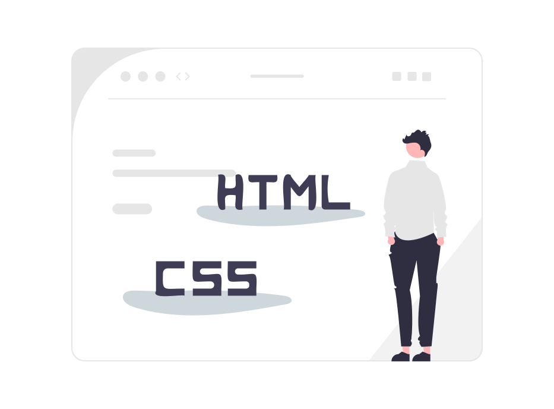
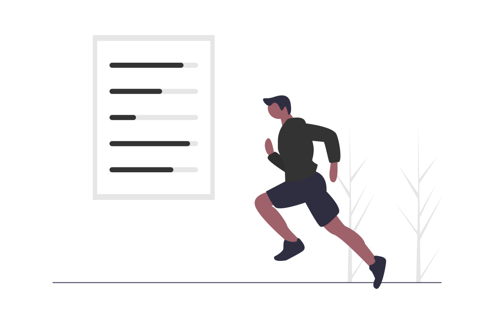

profile
about me
Kobayashi Yuta
- 1985年生まれ愛知県名古屋市出身。
中学、高校では運動部、大学時代はアカペラサークルに所属しておりました。 - 大学を卒業後、実家の家業である飲食店で勤務。
その後、書店にて正社員として接客販売を中心に勤めてきました。 - 店内のレイアウト用にデザインを学んでいたところ、Webデザインに興味を持ち学習を始めました。
- 書店を退社後、独学で二年ほどWebデザインとコーディングを学び現在も日々学習をしております。
- 趣味は野球観戦、音楽制作、御朱印集め
career
-
愛知県内の大学を卒業後実家の飲食店を継ぐ。
-
廃業後、名古屋市内の書店にアルバイトとして入社。
基本的には接客販売や配達を担当。 -
その後正社員となり、在庫の確認や返本などの商品管理を任される。
-
同市内にある他書店に転職。接客販売やシフト管理、アルバイトの育成を中心に三店舗に渡り店舗運営などを経験。その中で業務の１つであった店内POPのデザインを学ぶうちにWebデザインに興味を持ち、書籍や動画による独学を初める。
-
退社しWebサイトの作成を集中的に二年ほど学習し現在に至る。
skills
- HTML / CSS
- HTMLやCSSでのマークアップだけでなくSassを使用した記述も基本的な部分はできます。
またレスポンシブデザインへの対応も可能です。
エディターはVisual Studio Codeを使用しています。
- Java Script / jQuery
- 基本的な文法は一通り学習しましたので簡単なJavaScriptやjQueryを扱いWebサイトに動きをつけることができます。
あまりにも複雑なものは調べながらやるので時間がかかるかもしれません。
- PHP
- 自身のWebサイトを作成する場合はXDでワイヤーフレームを作成してコーディングをしていますので基本的な使用はできます。
- MySQL
- HTMLで作成したサイトをWord Press化し、更新、管理がしやすいようにすることができます。
また個人的なブログもWord Pressで運営しておりますので記事の更新や仕様には慣れております。
- Word Press
- HTMLで作成したサイトをWord Press化し、更新、管理がしやすいようにすることができます。
また個人的なブログもWord Pressで運営しておりますので記事の更新や仕様には慣れております。
- Adobe XD
- 自身のWebサイトを作成する場合はXDでワイヤーフレームを作成してコーディングをしていますので基本的な使用はできます。
- Photoshop
- illustratorはまだまだ学習中ですが基本的な操作は可能です。
- illustrator
- illustratorはまだまだ学習中ですが基本的な操作は可能です。
what i can do
- 
- Webデザイン
- サイトの設計、デザインを作成し、それをもとにWebサイトの製作ができます。またタブレットやスマートフォンに対応させたレスポンシブデザインもできます。
- コーディング
- ワイヤーフレームをもとに忠実に再現をし、様々な動きやエフェクトをつけることができます。またメンテナンスがしやすく見やすいコードを書くように努めています。
- CMS化
- Word Pressなどに代表されるものでHTMLとCSSで作成されたサイトを自身で容易に管理、更新ができるようなサイトに変更することができます。
- 
- 努力
- 昔からシミュレーションゲームや何かを作ることが好きで、地道にコツコツと努力することが得意です。 あまり使う機会がありませんが五感には自信があります。